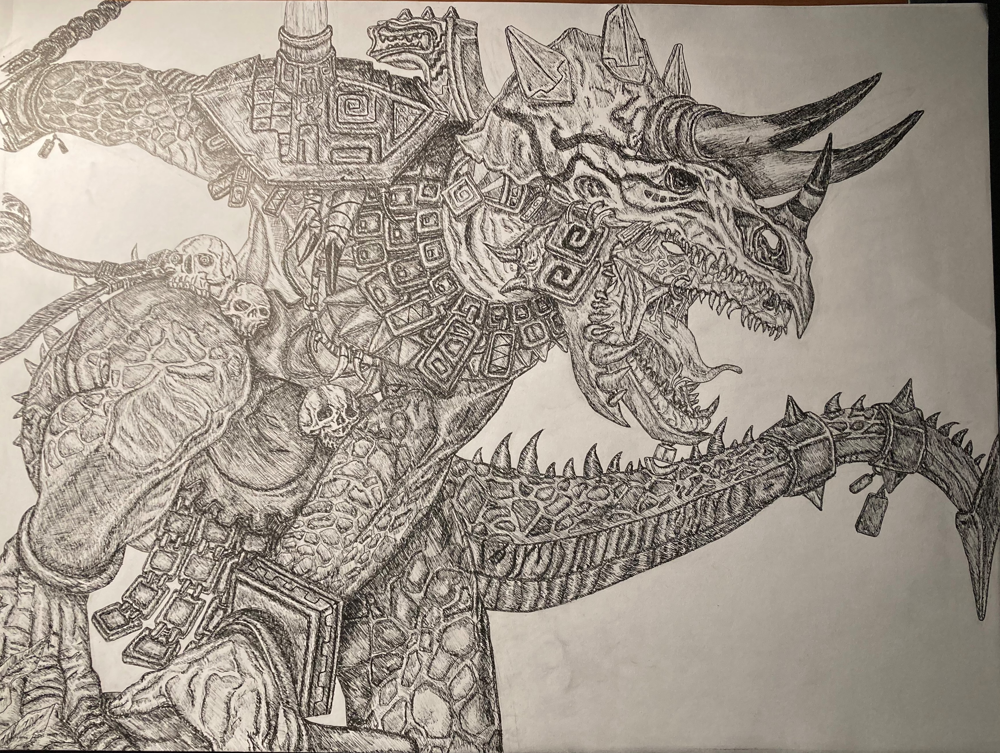
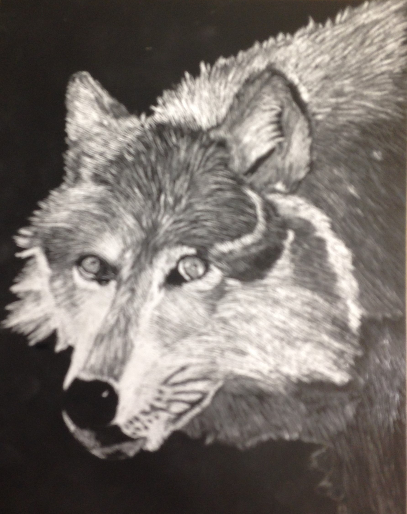
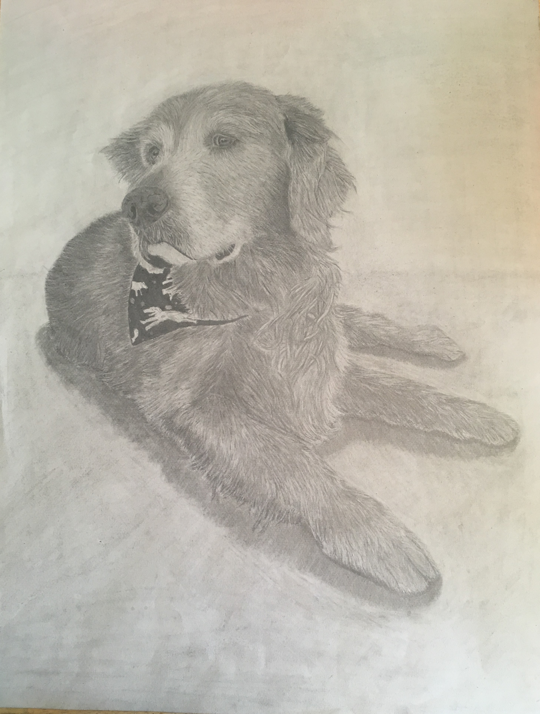
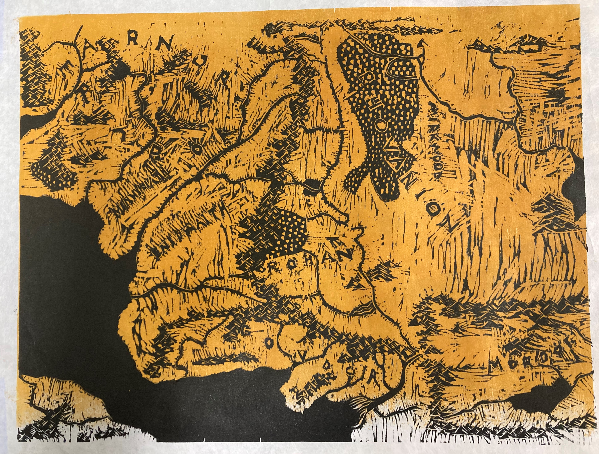
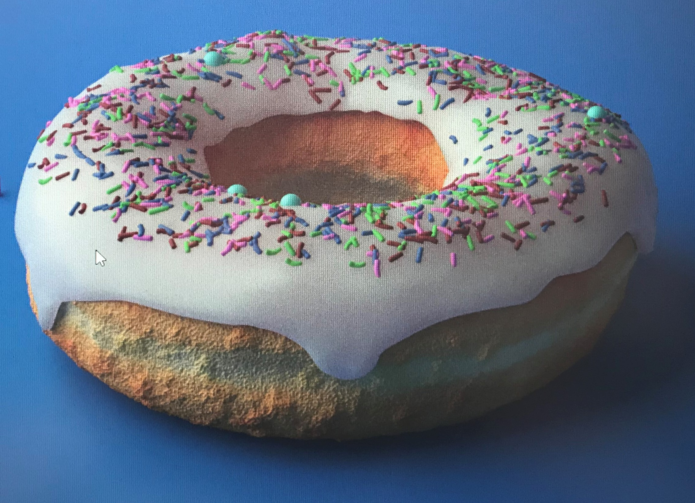

Exploring the Art Mediums
Hey! You found my art section! As student at UNL I chose to take a minor in Art. Although this was intense given my major, I was given the ability to explore even more meidums I didn't think possible, and continue my passion in the arts! Below are some sample pieces -from what I immediately have on me- that I've worked on through my time at University and side projects to pursue my interests in all aspects of the arts.
Pen and Ink
One of the first art forms I began experimenting with was pen and ink, which I immediately fell in love with for its availability to grasp for detail. This is something I further explored with cartography, and you can see some resemblence of that in a later medium below.

Animation
Although this is the newest art form I've been dabbling in, abliet I do enjoy the process, from simple walk animations like this, to more subtle pieces such as a flicker of a flame in a larger concept, and even exploring abstract pieces to give a deeper meaning in the work.
Again?
Yeah, here's another instance of myself using pen and ink for a character taken from the Warhammer relam - there's a reoccurring theme here. This was also the first and last project of pulling an 'all-nighter' on an art project. Although I do wish I took more time on the shading for this guy.
Etching
I add this primarily as it was one of the first pieces I've made, where I explored how etching works and attempted to create a wolf. Although my dad always thought it was a dog. I did experiement with this practice more at the same time of the printmaking project, where I etched the witch king -from LOTR- and displayed him in a few colors.
Photography
One of my favorite expression of art comes through Photography, allowing us to not only peer in the physical realm of the photo, but the deeper meaning behind the location and placement of the objects in the scene, and grasp the intentions of the photographer. This style also gives us to ability to physically move to our destinations, in which I thoroughly enjoy exploring the surrealism of nature and the emotions it brings, so below is a picture of some branches.
Graphite
Graphite -or just pencil- has been my favorite medium of art, which allows the user to express themselves most vividly -aside from paint/charcoal, which I currently don't have accesss to my pieces of these-. I have been drawing with pencil the longest, and is the the process I enjoy most in my art. The below image is one that is probably most important to me, and one I did a while ago to draw one of my family members -rest in peace Copper-.
Printmaking
This has to be the most intriguing art sytle I've pursued. I didn't quite know what I was getting myself into -both literally and figuratively- but this was a great introduction to the art of monotyping, relief, paintrly and woodcutting. These are just a few I've been fortunate to work in, but there are many other forms out there! Below is a reductive relief print, of the Lord of the Rings map. Despite needing a smaller blade for this piece, this style is what I grasped and worked on the most when printmaking.
Sculpting
Below is a quick video of a bust I created in Cinema 4D which is planned to be imported into a game in development. I have taken up scultping many character from the Warhammer Fantasy Universe, and am working on an undead army, where I have 3D printed, and plan to paint - someday. As a side note for this model in particular, I wish to remove the glow on the eyes. The inital design, included Ambient Occlusion and glow in the render, but the rendering time shot up to 2 weeks on my system, so this had to do.
Donut?
It wouldn't be fair to show a 3D model without bringing in the donut that anyone who owns Blender hasn't already made. This is also a great object to show how I started my journey in 3D modeling.
- Projects